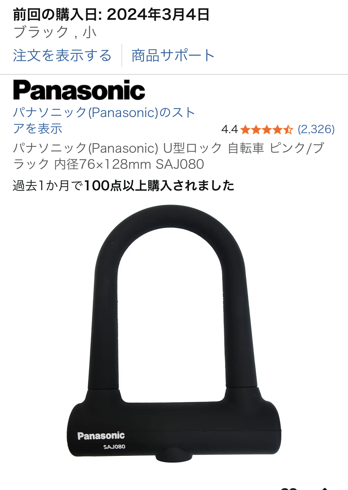

自転車用U字ロックを口コミからレビュー｜ロープ・チェーンより安心できる理由

「ロープやチェーン系はハサミで一撃で切断される」と自転車店員さんから説明を受けて、 大手メーカー製のU字ロックを選んだ――今回の口コミは、まさにそんな“防犯意識が一段上がった瞬間”を切り取った内容でした。 見た目はシンプルでも、中身はしっかり太い金属で構成されており、切断への耐久性が高そうだという安心感が伝わってきます。
本記事では、この口コミ内容と一般的な自転車防犯の知識を組み合わせて、 自転車用U字ロックのメリット・デメリット・向いている人を分かりやすくレビューします。 通勤・通学で自転車を毎日使う人や、クロスバイク・ロードバイクを屋外に停める機会が多い人にとって、 「ロープや細いワイヤーロックで本当に大丈夫？」と一度は悩むポイントを、具体的にイメージできる内容にしました。
口コミから分かるU字ロックの強み｜太い金属とシンプルな構造
まず、印象的なのが「中身はしっかり太い金属なので切断には強そう」「ロックの機構が単純なので壊れにくい」という評価です。 ロープや細いチェーンタイプは、見た目の取り回しやすさはあるものの、工具さえあれば比較的短時間で切断されてしまうことが多いと言われます。 一方、U字ロックは太い金属の塊に近く、ボルトクリッパーなどの大型工具がないと簡単には切れないのが大きな強みです。
また、ロック機構が複雑すぎないこともポイントです。 ギミックが多い鍵は、使っているうちに可動部が渋くなったり、内部の部品が壊れたりするリスクがあります。 その点、この口コミで語られているU字ロックは、構造が単純で扱いやすく、日常的な開け閉めでもストレスが少ないタイプ。 「毎日使う日用品」として考えると、この壊れにくさ・扱いやすさはかなり重要です。
- 大手メーカー製で品質面の安心感が高い
- 太い金属製で、ロープ・チェーンより切断されにくい
- ロック機構が単純で、壊れにくく扱いやすい
ロープ・チェーンロックと比べたときの違い
自転車売り場を見ると、ロープタイプ・チェーンタイプ・ワイヤータイプなど、さまざまなロックが並んでいます。 それぞれにメリットはありますが、防犯性だけを優先するなら、やはり太い金属のU字ロックが一歩リードしているのが実情です。
ロープや細いチェーンは、柔らかくて巻き付けやすい反面、工具で挟み込める余地が大きく、 「ハサミで一撃」とまではいかなくても、専用工具があれば短時間で切断されてしまうケースがあります。 それに対してU字ロックは、断面が太く、工具を噛ませるスペースも限られるため、 盗難を狙う側からすると「時間がかかる、面倒なターゲット」になりやすいのです。
もちろん、どんなロックでも「絶対に盗まれない」わけではありません。 ただ、同じ駐輪場に複数台の自転車が並んでいる状況では、より手間のかかるロックが付いている自転車は狙われにくいというのは、防犯上よく言われる考え方です。 そういう意味で、U字ロックは「盗難リスクを現実的に下げる日用品」として、かなりコスパの良い選択肢だと感じます。
実際の使い勝手｜重さ・持ち運び・日常利用のリアル
防犯性が高い一方で、気になるのが「重さ」と「持ち運びやすさ」です。 太い金属でできている以上、ロープやワイヤータイプより重くなるのは避けられません。 ただ、最近のU字ロックは、フレームに取り付けるホルダーが付属していたり、カバンに入れても邪魔になりにくいコンパクトサイズだったりと、 日常使いを意識した設計のものが増えています。
口コミで「取り扱いも単純で良い」と評価されている点からも、鍵の抜き差しやロックの開閉がスムーズで、 通勤・通学の忙しい時間帯でもストレスなく使えている様子がうかがえます。 特に、毎日同じ駐輪場に停める人にとっては、「サッとロックして、サッと外せる」ことが継続利用のカギになります。
個人的には、以下のような使い方をイメージすると、U字ロックのメリットを最大限活かせると感じます。
- 自宅〜駅までの通勤用自転車に常備しておく
- クロスバイク・ロードバイクを屋外の駐輪場に停めるときのメインロックにする
- 子どもの自転車でも、盗難リスクが高いエリアではU字ロックを選ぶ
どんな人にU字ロックがおすすめか
口コミと一般的な防犯の観点を踏まえると、自転車用U字ロックは次のような人に特におすすめできます。
- 駅前や商業施設など、人目はあるが盗難も多いエリアに停めることが多い人
- クロスバイク・ロードバイクなど、盗難リスクの高い車種に乗っている人
- 「とにかく安心感を優先したい」「細いワイヤーロックだけでは不安」という人
逆に、マンションの屋内駐輪場や自宅敷地内のみでしか使わない場合は、ここまで頑丈なロックが必須とは限りません。 ただ、一度盗難に遭ってから買い直すコストや精神的ダメージを考えると、 最初から大手メーカー製のU字ロックを選んでおくのは、かなり合理的な判断だと思います。
まとめ｜日常使いできる「安心感重視」の防犯アイテム
今回の口コミから見えてきたのは、「大手メーカー製で品質は安心」「太い金属で切断に強そう」「ロック機構が単純で壊れにくい」という、 自転車用U字ロックの本質的な魅力でした。 ロープやチェーンタイプに比べると、多少の重さや取り回しの制約はあるものの、 それを補って余りある防犯性と安心感が得られます。
通勤・通学の相棒として自転車を長く使いたい人にとって、U字ロックは「保険」のような存在です。 一度導入してしまえば、毎日の施錠が習慣になり、盗難リスクを現実的に下げてくれます。 「そろそろロープロックから卒業したい」「大事な自転車をしっかり守りたい」と感じているなら、 U字ロックは真っ先に検討する価値のある日用品だと言えるでしょう。
気になった方は、実際のサイズ感や仕様を商品ページでチェックしてみてください。 自分の自転車や駐輪環境に合うかどうかをイメージしながら選ぶと、満足度の高い一本に出会えるはずです。
※本リンクはアフィリエイトリンクを含みます。リンク経由のご購入でも、商品価格は変わりません。